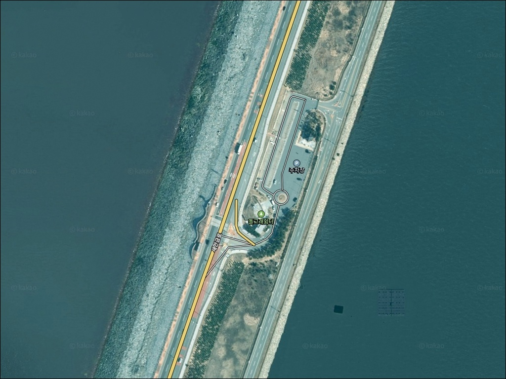
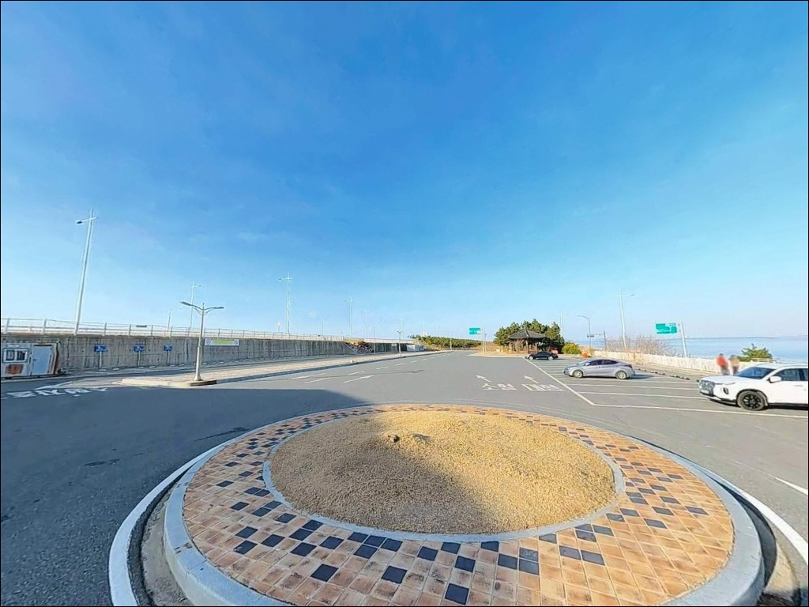
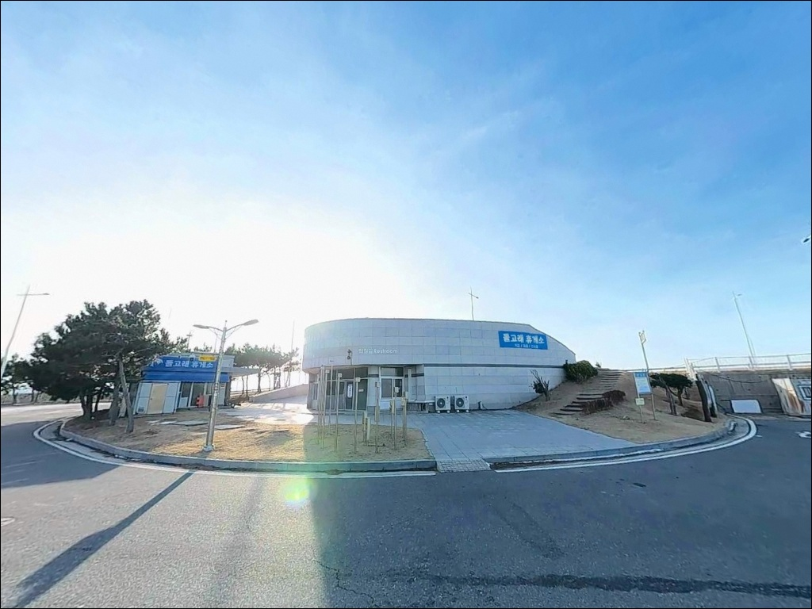
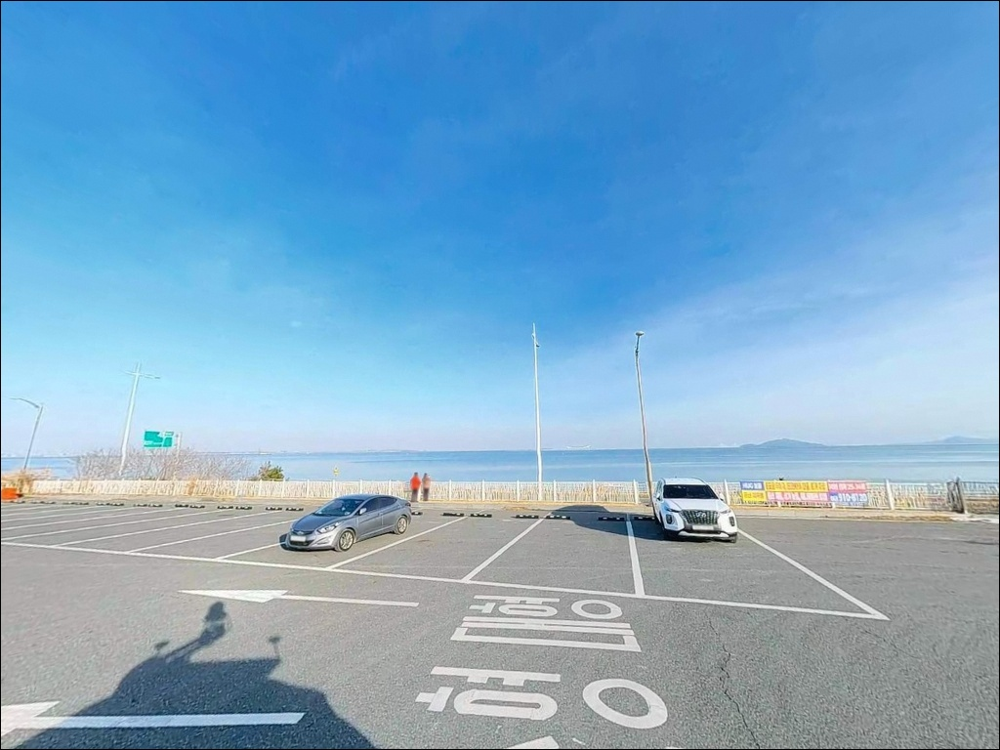
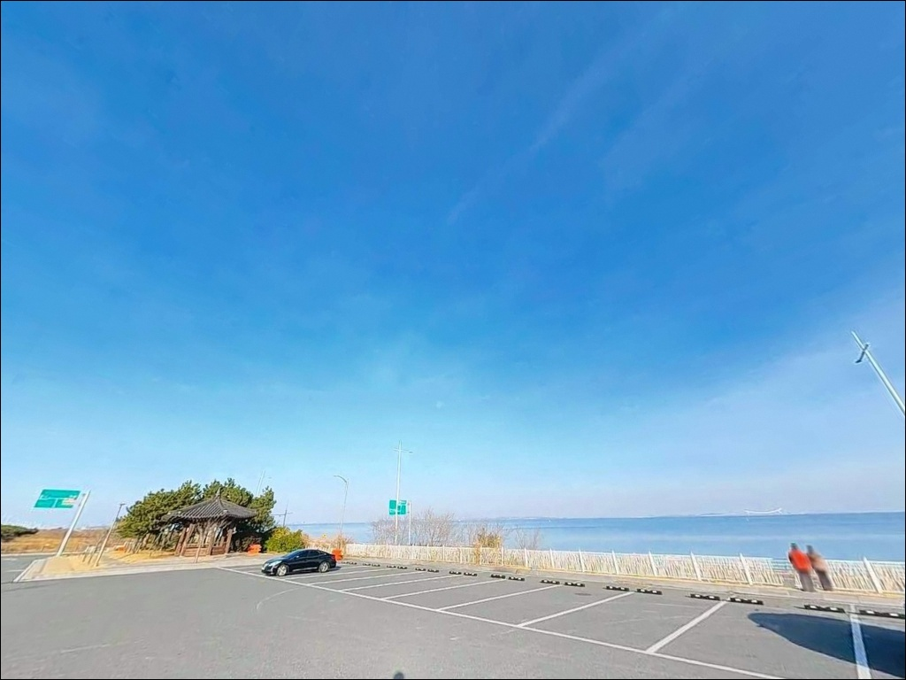
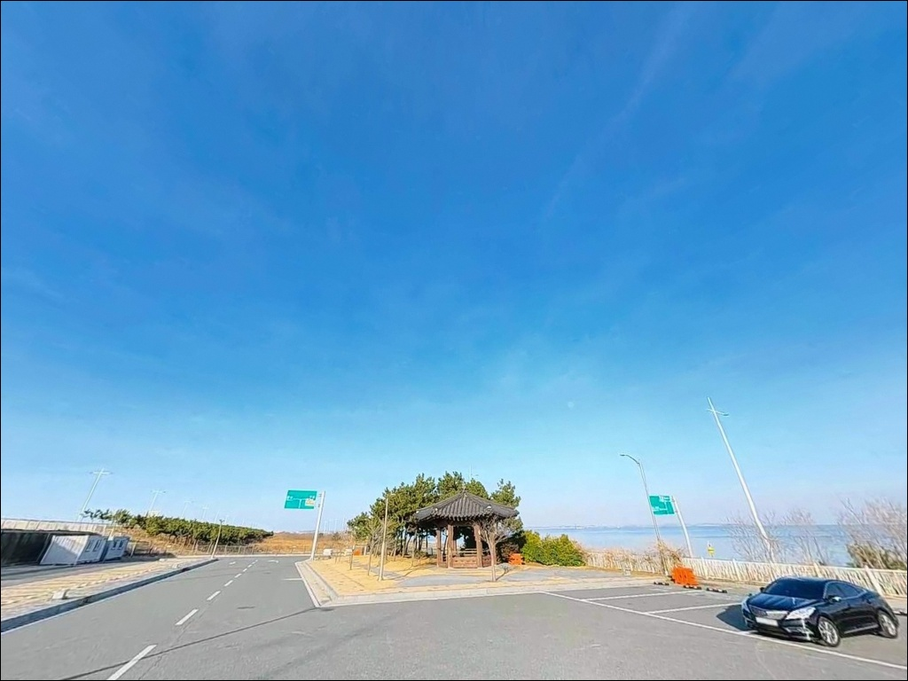
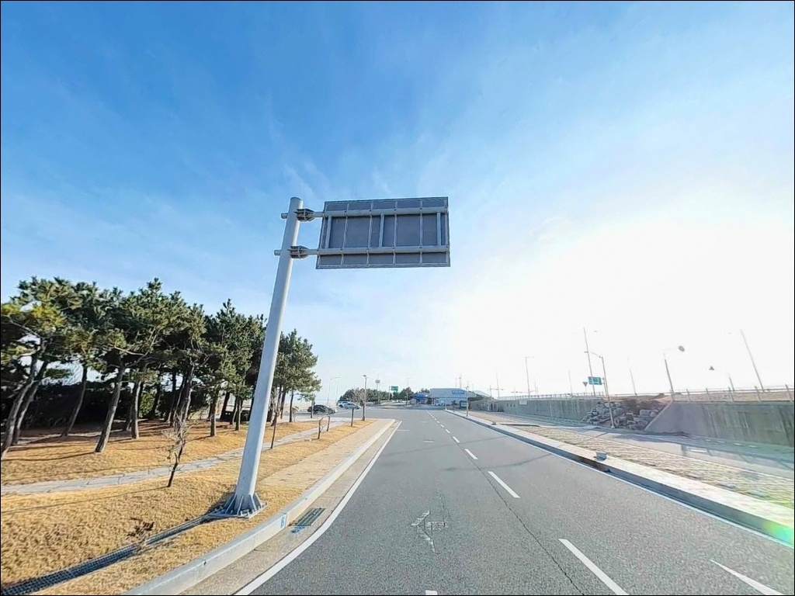
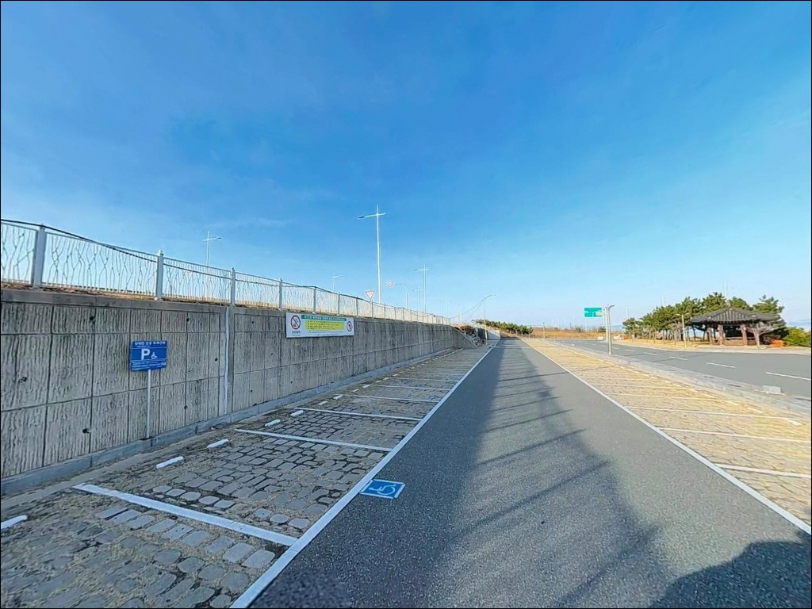
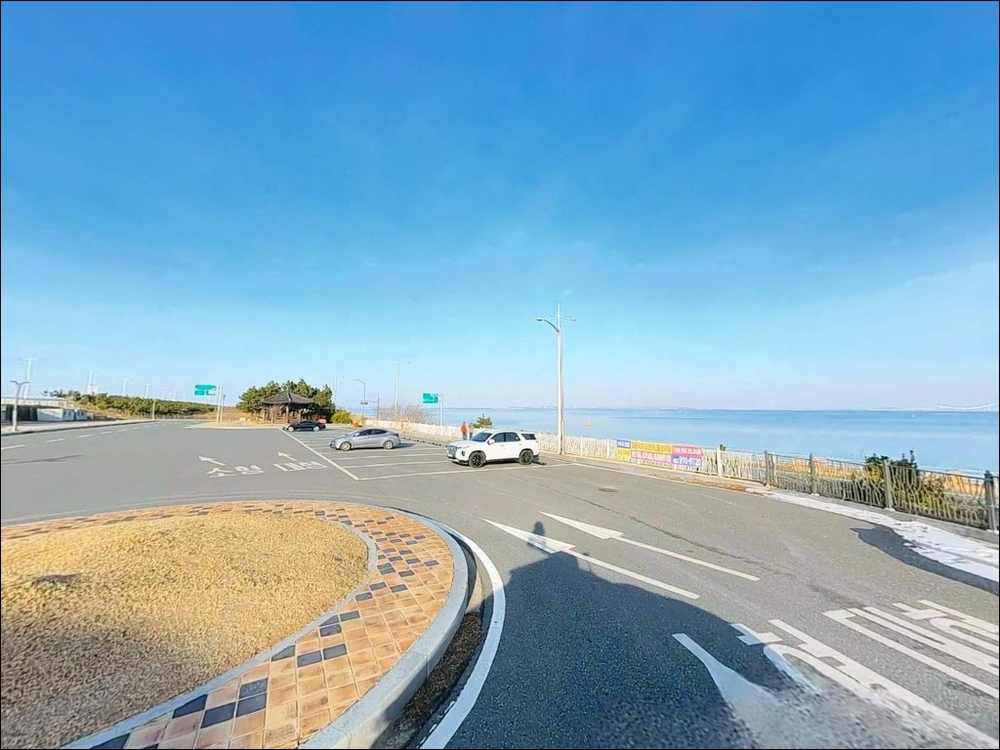

돌고래쉼터, 야미도 전북 군산시 한적한 분위기 속 차박, 낚시를 함께 하기 좋은 곳
이 페이지에는 광고(제휴 링크 포함)가 있으며, 광고 링크를 통해 구매하면 운영자가 판매 수익 또는 수수료를 받을 수 있습니다. 포인트 사진: 카카오맵 스카이뷰·로드뷰. 이 페이지의 지도·사진 이미지는 카카오맵의 실제 서비스 이미지와 다를 수 있습니다.


포인트 안내
돌고래쉼터
전북 군산시 옥도면 야미도리 159-1
돌고래쉼터 석축 바로 앞에서 캐스팅하면
채비가 바닥 암초에 걸려 빠져나오지 못하는
구조입니다.
많은 낚시인이 차를 세우고 그 자리에서
바로 낚시를 시작했다가
채비만 날리고 철수하는 실수를 반복합니다.
이 글은 돌고래쉼터를 거점 삼아
유효한 낚시 자리를 찾는 방법,
바람 변수 판단 기준,
인근 대체 포인트 이동 조건을 정리합니다.
조황 단정이나 특정 어종 보장은
이 글의 범위에 포함되지 않습니다.

1. 새만금방조제 진입 방식과 주차 거점 활용법
돌고래쉼터는 새만금방조제 도로(새만금로, 국도 77호) 위에 조성된
공공 쉼터로, 비응항 방향에서 방조제를 타고
직선 진입이 가능한 구조입니다.
전 구간 포장도로로 차량 접근성은
서해 낚시 포인트 중에서도 매우 좋은 편입니다.
다만 새만금방조제 도로는
왕복 2차선 고속 주행 구간입니다.
갓길에 차를 세우고 낚시를 시작하는 경우가 있는데,
야간에는 특히 추돌 위험이 큰 구간입니다.
쉼터 전용 주차장에 안전하게 주차한 뒤
낚시 포인트까지 걸어가는 방식이
이 포인트의 기본 이용 방법입니다.
쉼터 내 전용 주차 공간이 갖춰져 있어
회차에 큰 불편은 없습니다.
주차 후 야미도 방향으로 도보 이동하면
밑걸림이 덜한 낚시 구간에 닿을 수 있어,
주차 거점으로서의 역할이
이 쉼터의 핵심 기능입니다.

2. 방조제 차박, 체류 전 반드시 알아야 할 사항
돌고래쉼터 주차장에는
한국농어촌공사 명의로 설치된 안내판이 있습니다.
텐트 설치와 취사 행위는 금지되어 있으며,
쉼터 내 불 피우는 행위는
경범죄처벌법에 따라 과태료 부과 대상입니다.
출발 전 이 조건을 먼저 인지하고
체류 방식을 결정하는 것이 순서입니다.
새만금방조제 위에 있는 특성상
사방이 탁 트여 바람 노출이 강합니다.
군산 일대는 오후부터 서풍이 강해지는 경향이 있어
방조제 위에서의 야간 체류는
방풍 준비가 충분하지 않으면 불편합니다.
방조제 도로를 통과하는 차량 통행이
야간에도 이어지는 환경이므로,
조용한 숙영보다 낚시 중심 단기 체류로
접근하는 것이 현실적입니다.


3. 주변 편의시설 — 매점·화장실 현황
돌고래쉼터 내에는 매점이 운영됩니다.
새만금개발청 공식 자료 기준으로
새만금방조제 3개 쉼터 중 돌고래쉼터가
매점 운영 구간에 포함되어 있습니다.
화장실 역시 방조제 전체 14개소가 운영되는 구조로,
돌고래쉼터 구간에서 기본 위생시설을
이용할 수 있습니다.
방조제 반경 2~3km 거리에는
해넘이휴게소가 있어 편의점 이용이 가능합니다.
야미도 방면으로 이동하면
야미도항 일대에 낚시용품점이 있어
소품 보충 동선으로 활용할 수 있습니다.
식수, 얼음, 채비 여분은
출발 전에 갖춰 오는 것이 안전합니다.

4. 출조 전 반드시 확인해야 할 두 가지 변수
첫 번째는 물때입니다.
서해는 조차가 커서 간조와 만조 사이 수심 차이가 크게 납니다.
돌고래쉼터 앞 석축은 간조 시
기저부가 드러나는 구조입니다.
바다타임에서 군산·야미도 기준 물때를 확인하고,
만조 전후 타이밍에 맞춰 출발 시각을
잡는 것이 기본 전략입니다.
야간 조과가 더 좋다는 경험이 많아
해질녘~야간 타임을 목표로 하는 낚시인이 많습니다.
두 번째는 풍속입니다.
군산 일대는 오후부터 서풍이 강해지는 특성이 있습니다.
새만금방조제는 바다 위에 놓인 구조물이라
바람의 영향이 내륙 포인트와 차원이 다릅니다.
낮 시간 낚시가 불가능하다고 판단하는
낚시인도 적지 않습니다.
기상청 군산 풍속 예보를 당일 아침
다시 한번 확인하는 것이 포인트 낭비를
막는 조건입니다.
새만금 석축 낚시에서 아이젠 착용은
개인 선택이 아니라 안전을 위한 기본 준비입니다.
간조 시 드러나는 석축 표면은
해초와 미역이 덮여 있어
아이젠을 신어도 미끄러운 구간이 있습니다.
밑창이 튼튼한 낚시 전용화와
아이젠을 함께 준비해야 합니다.

5. 석축 지형 분석 — 낚시 자리는 걸어서 찾아야 합니다
새만금방조제 외해 면은 대형 돌을 적층한
석축 구조로 이루어져 있습니다.
돌고래쉼터 바로 앞쪽은 돌무더기가
무너져 내린 지형이 많아 밑걸림이 매우 심합니다.
이 구간에서 바닥층을 직접 노리는 채비 방식은
채비 손실이 반복될 가능성이 높은 구조입니다.
실낚시 구간은 쉼터에서
야미도 방향으로 도보 약 1km 이동한 지점입니다.
방조제 외해 방향으로 캐스팅하면
수심이 점진적으로 깊어지는 서해 방조제 패턴이 형성되며,
조류가 직선으로 흐르는 구조라
루어와 크로켓 방식 모두
넓게 탐색하기 유리한 여건입니다.
야간에는 집어등을 활용하는 방식이
이 구간에서 주로 쓰이며,
회유성 어종이 통과하는 타이밍을 노리는
낚시 방식이 지형 특성과 잘 맞습니다.
출조 전에 새만금방조제 돌고래쉼터 조황,
야미도 낚시 조황 키워드로
최신 정보를 먼저 확인하는 것이 좋습니다.


6. 이 구간에 어울리는 낚시 스타일과 기대 어종
루어낚시가 이 구간 지형에 가장 잘 맞는 스타일입니다.
메탈지그나 메탈루어를 주간에 활용하고,
야간에는 집어등과 함께 운용하는 방식이
회유성 어종 대응에 유리합니다.
고등어·삼치가 회유하는 시즌에
방조제 외해 방향 중층을 넓게 탐색하는
방식이 이 포인트의 기본 공략법입니다.
가을철 풀치 시즌에는
이 구간의 조과 기대치가 올라갑니다.
8월 후반부터 10월 사이,
해질녘부터 야간 간조 타이밍을 노리면
풀치·고등어·삼치를 함께 狙할 수 있는
시즌이 겹칩니다.
군산 일대 방조제는 오후부터 서풍이 강해지는 경향이 있어,
오전 또는 야간 출조가 낚시 여건을
안정적으로 확보하는 방법입니다.
봄 시즌(4~5월)에는 우럭을 노려볼 수 있습니다.
원투낚시로 바닥층을 공략할 경우
쉼터 바로 앞보다는 야미도 방향 이동 후
밑걸림이 적은 구간을 먼저 확인하는 것이
채비를 아끼는 방법입니다.
주꾸미·갑오징어 에깅은
시즌 중에는 야미도 방향 석축 구간에서
병행해볼 만한 스타일입니다.

7. 조건이 안 맞을 때 이동할 대체 포인트
돌고래쉼터에서 야미도 방향으로
1~2km 거리에 야미도 선착장과 갯바위가 있습니다.
선착장에서 해안도로를 따라 500m가량 들어가면
발판이 높고 수심이 있는 갯바위 지대에 닿습니다.
이 구간에서는 감성돔·우럭·노래미·광어 등을
기대해볼 수 있는 지형 조건이 갖춰져 있어,
돌고래쉼터 조건이 여의치 않을 때
가장 먼저 이동할 1순위 대안입니다.
신시도 방파제는 돌고래쉼터에서
방조제를 따라 5~6km 거리입니다.
가로등이 켜져 있고 발판이 좋아
야간 낚시 여건이 안정적입니다.
해양경찰서가 인근에 있어
낚시 환경 관리 측면에서도
군산 낚시인들이 조용히 우럭을 노리는
루어 포인트로 알려진 곳입니다.
방조제 반대편인 비응항 방면으로도
이동 동선을 잡을 수 있습니다.
해넘이쉼터를 포함한 방조제 구간 전체가
비슷한 지형 패턴을 갖추고 있어,
당일 조황 키워드 검색을 통해
컨디션이 좋은 구간으로 이동하는
유연한 운용이 가능한 벨트 형태 포인트입니다.

거점 삼기 좋은 곳,
낚시 자리는 걸어서 찾아야 합니다
가을 풀치·고등어 시즌이나
봄 우럭 루어를 즐기는 낚시인이라면
돌고래쉼터를 주차 거점으로 삼아
야미도 방향으로 이동하는 방식이
이 구간을 가장 잘 활용하는 방법입니다.
메탈지그·크로켓 중심으로 준비하고,
야간 출조를 기준으로 잡으면
회유성 어종 대응에 유리한 조건이 만들어집니다.
반면 쉼터 바로 앞에서 낚시를 시작하면
석축 밑걸림으로 채비를 반복적으로 날리는
상황을 피하기 어렵습니다.
물때, 풍속, 이동 구간 선정—
이 세 가지를 출발 전에 정리해두면
빈손 귀가 확률을 크게 낮출 수 있습니다.
텐트 없이 차 안에서 하룻밤을 보내는
낚시인이라면 야미도 방면으로 이동해
좀 더 안정적인 환경을 찾는 것이 낫습니다.
새만금방조제 위에서 낚싯대를 드리우고
서해 바람을 맞으며 기다리는 시간 자체를
즐기는 방식으로 접근한다면,
돌고래쉼터는 접근성 하나만으로도
다시 찾을 이유가 있는 곳입니다.